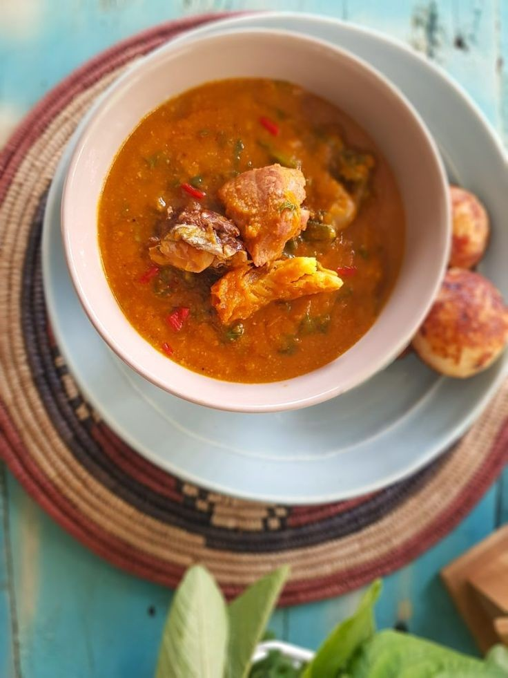

About Us
Eats was born out of a passion for sharing the incredible taste of Nigerian cuisine with the world. We believe that food is more than just sustenance; it's a journey that connects us to our culture, heritage and loved ones.
At Eats, we source authentic ingredients and traditional recipes to create delicious Nigerian meals you can enjoy at home. Whether you're a seasoned Nigerian food enthusiast or a curious newcomer, we invite you to explore the vibrant flavors of our homeland.

Ready to embark on your own delicious adventure? Browse our menu and discover the taste of Nigera today!